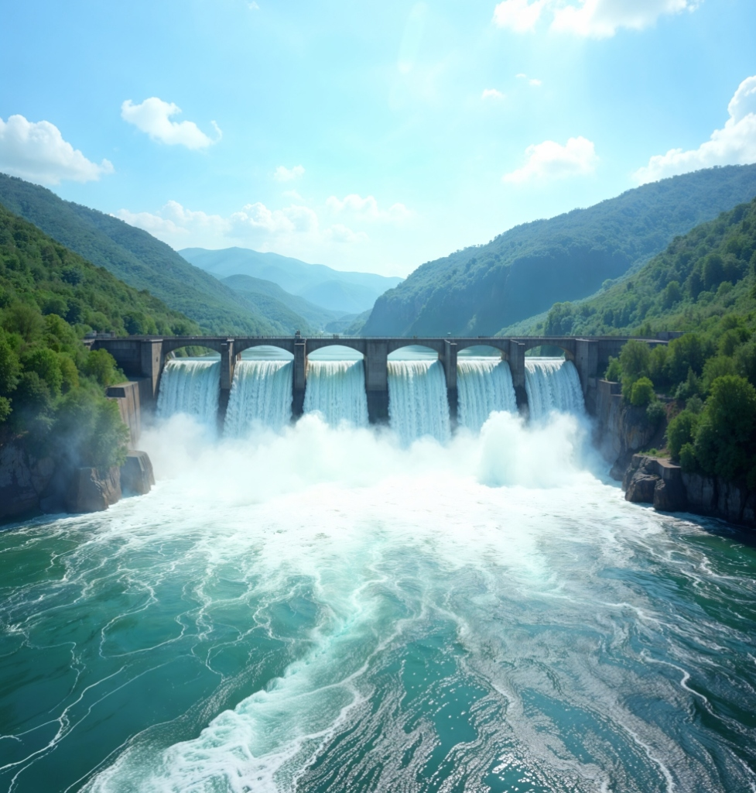
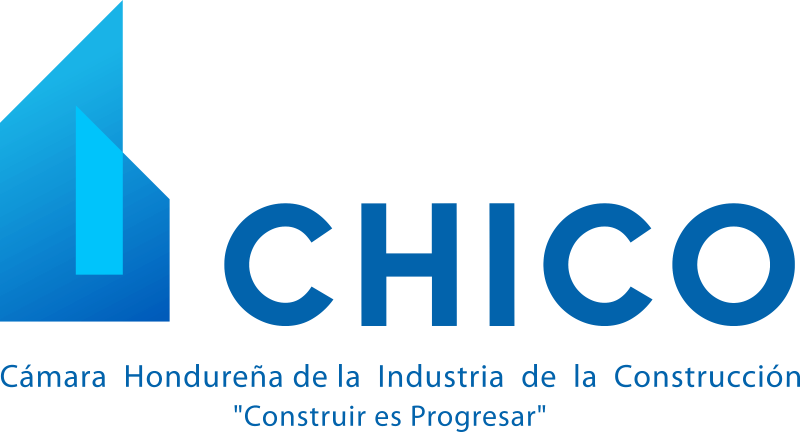
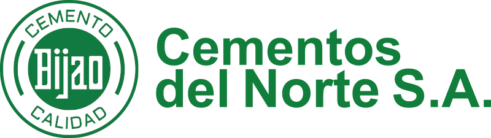
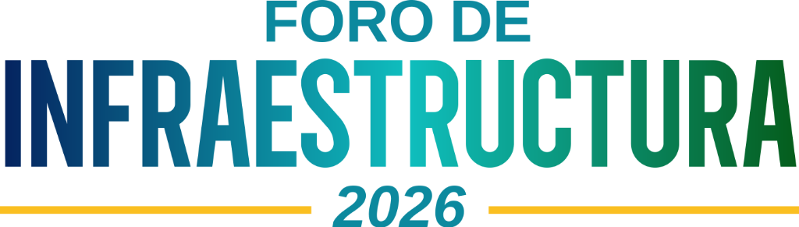
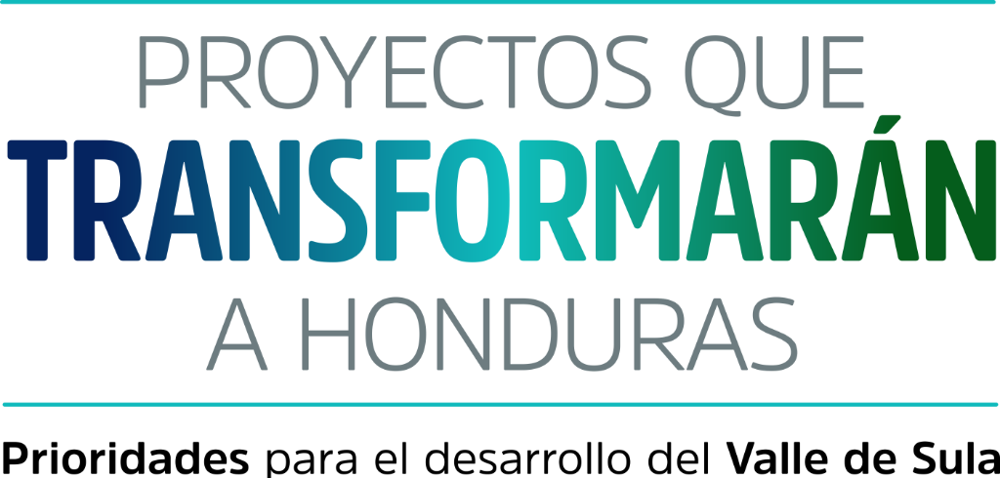
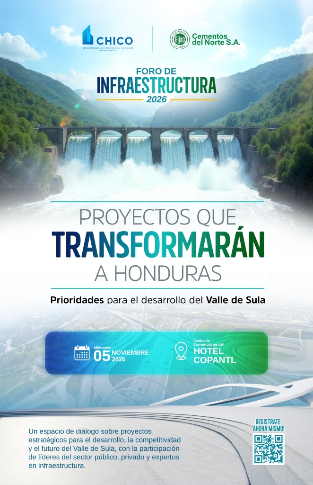
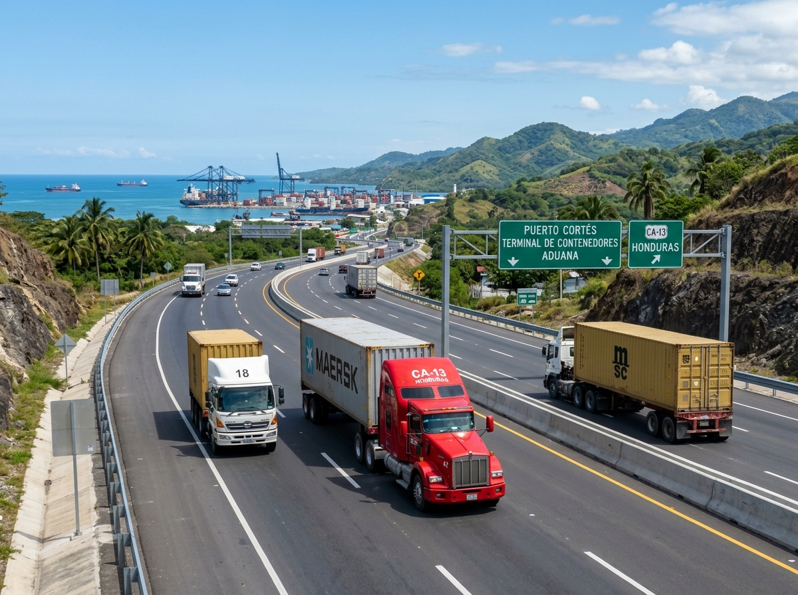
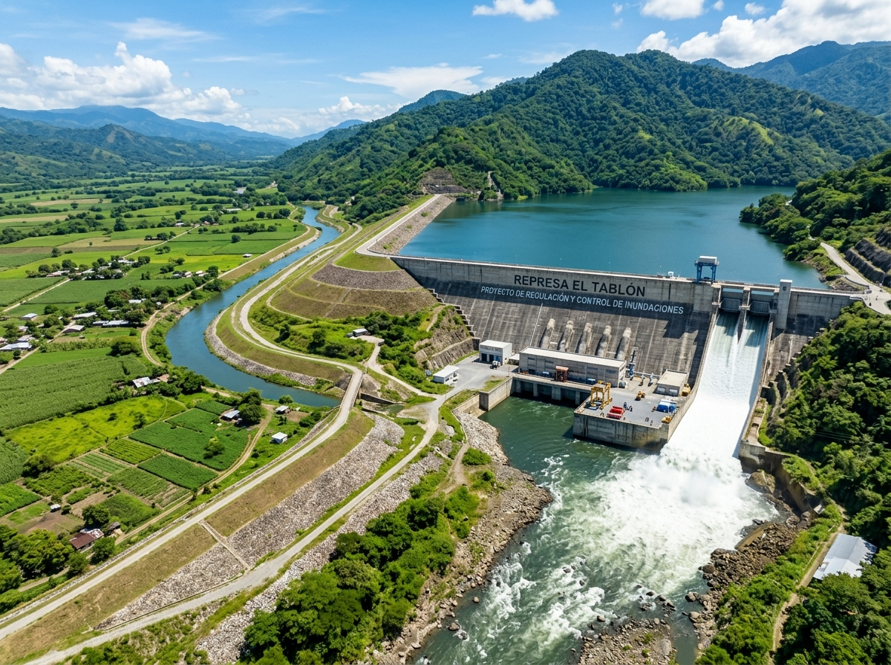
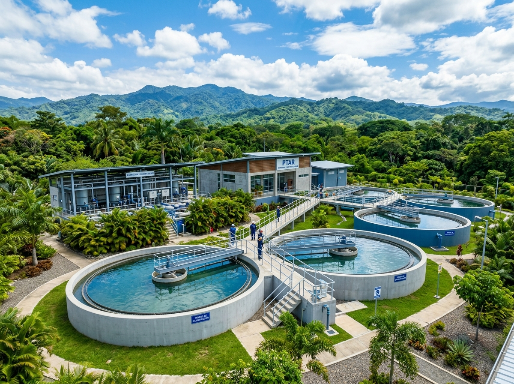
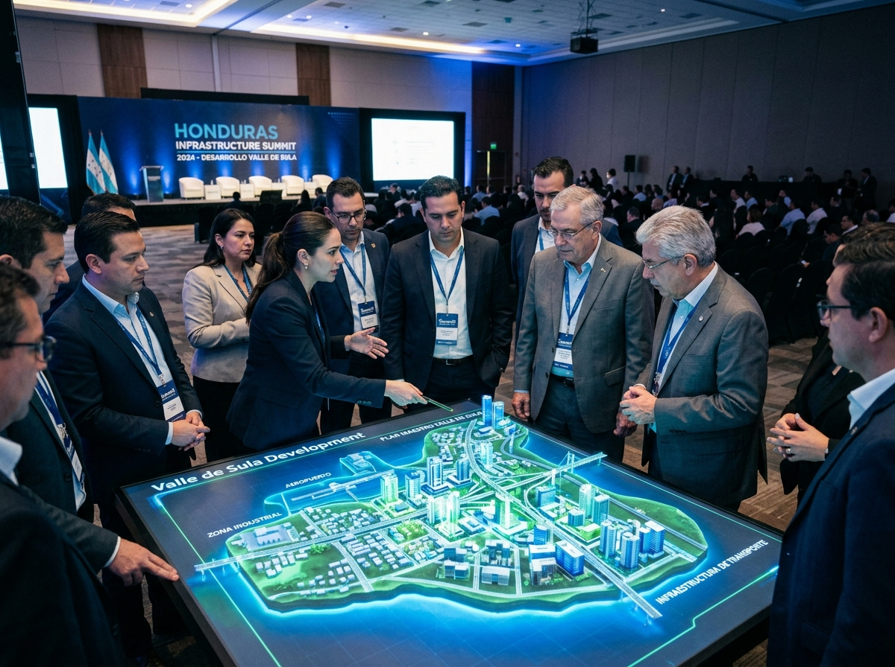

Con la participación de líderes del sector público, sector privado y los más reconocidos expertos en infraestructura de la región.
El Valle de Sula representa una de las regiones de mayor importancia económica, productiva y logística de Honduras, al concentrar una significativa actividad agrícola e industrial y albergar aproximadamente el 27 % de la población nacional.
Su aporte a la dinámica económica del país hace indispensable fortalecer la inversión pública y privada destinada a obras que potencien su competitividad y, al mismo tiempo, protejan a sus habitantes y sectores productivos que generan más del 60% del PIB hondureño.
"La ejecución de proyectos viales, logísticos, hidráulicos y de saneamiento no debe analizarse de manera aislada, sino como parte de una estrategia integral que permita proteger a la población, aumentar la resiliencia de las ciudades, facilitar la inversión, mejorar la competitividad y generar nuevas oportunidades de empleo."
Invertir en la infraestructura del Valle de Sula representa invertir en una de las principales plataformas productivas de Honduras y en el desarrollo sostenible y competitivo del país.

Proyectos de alta prioridad técnica y económica para transformar la conectividad, resiliencia y competitividad del Valle de Sula y de toda Honduras.

El fortalecimiento de la red vial constituye un elemento esencial para mejorar la movilidad de personas y mercancías, reducir costos logísticos y favorecer la competitividad de la zona norte del país.

Obras prioritarias para proteger la vida humana, los centros agrícolas e industriales que generan más del 60% del PIB y salvaguardar las vías de comunicación ante eventos climáticos severos.

El desarrollo económico del Valle de Sula debe complementarse con infraestructura que contribuya a la salud de la población, el saneamiento básico y la protección integral de las cuencas fluviales.

Una planificación integral que articule a las instituciones públicas, gobiernos municipales, sector privado de la construcción, organismos financieros y gremios para una ejecución transparente y sostenida.